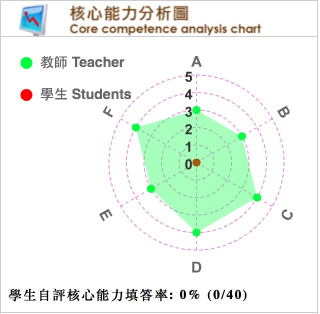

103 學年 第 2 學期
(中 Ch.)Ｗeb程式設計
(英 Eng.)Web Programming
余能豪
群修
3.0
限學程同學方得修習。
本課程旨在介紹WWW的基本運作原理並以其為平台開發應用程式，包含HTML5/CSS3動態網頁製作、網頁物件模型(DOM)、JavaScript程式設計與雲端應用等。
本課程涵蓋網路平台之最新技術如HTML5, CSS3, Javascript, JSON, JQuery等，並介紹國內外網站及網路行銷活動範例，培養學生網頁應用程式之開發能力及資訊架構設計能力，最後能設計兼具功能與美感的動態網站。
1. Course Introduction / Git
2. HTML5
3. CSS3 (I)
4. CSS3 (II)
5. IA - Analysis
6. Grid system / bootstrap
7. IA presentation
8. Responsive design
9. Midterm
10. Javascript (I) / DOM
11. Javascript (II) / JQuery
12. Parse / JSON
13. 校慶運動會
14. Heroku / Node.js
15. Websocket
16. Guest speaker
17. Google Analytics
18. Final demo
課堂作業(35%) 、期中作業(20%)及期末實作成品成果展示(30%)
. Eric Freeman, Elisabeth Robson(2011), Head First HTML5 Programming: Building Web Apps with JavaScript, O'Reilly . Crockford Douglas, JavaScript: The Good Parts, O'Reilly
N/A

A.具備發現與解決問題之能力 B.具備敘事與美學能力
C.具備科技研發與系統開發能力 D.具備團隊合作力
E.具備人文關懷與社會參與情操 F.具備企劃整合與溝通能力